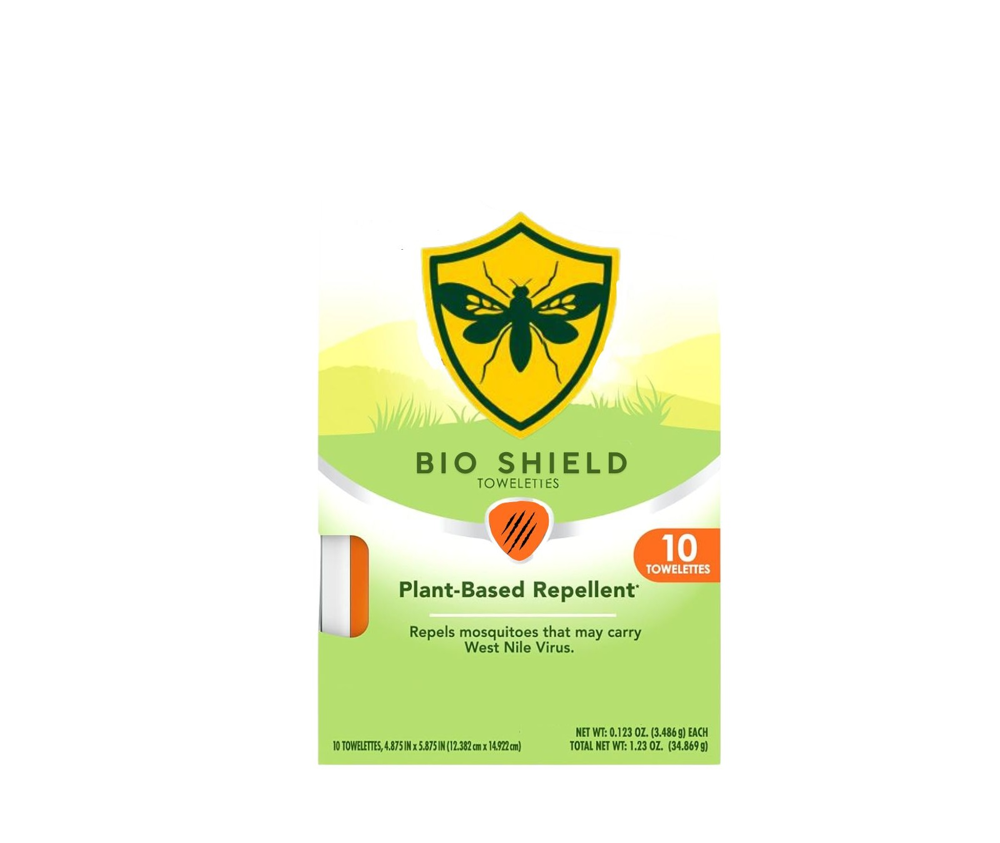
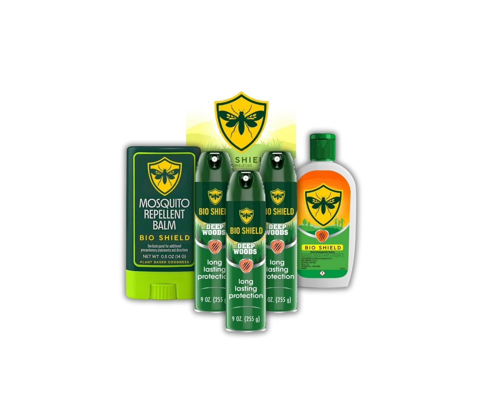

Keep bugs at bay the natural way with Bio Shield Insect Repellant Spray. Formulated with powerful plant-based essential oils, it provides long-lasting protection against mosquitoes, ticks, and other biting insects—without harsh chemicals. Safe for the whole family and perfect for outdoor adventures, Bio Shield is your invisible shield against nature's pests. Stay protected, and happy trails!.

This non-greasy, fast-absorbing formula combines gentle moisturizers with natural insect-repelling ingredients to provide lasting defense against mosquitoes, ticks, and other pests. Ideal for daily use, it's safe for all skin types and perfect for both kids and adults. Stay soft, safe, and shielded with Bio Shield Lotion.
Convenient protection on the go—Bio Shield Insect Repellant Wipes are infused with a powerful blend of plant-based essential oils to naturally repel mosquitoes, ticks, and other biting insects. Gentle on skin and free from harsh chemicals, each wipe is individually packaged for easy use anytime, anywhere. Perfect for travel, outdoor activities, or quick touch-ups. Clean, simple, and effective—protection you can count on.

Compact, natural, and powerful—Bio Shield Insect Repellant Balm offers targeted protection with a soothing blend of plant-based essential oils. This easy-to-apply balm glides smoothly onto pulse points, creating a protective barrier against mosquitoes and other biting insects. Free from synthetic chemicals and ideal for sensitive skin, it's perfect for travel, outdoor adventures, or everyday use. Pocket-sized peace of mind—wherever you roam.
Complete your defense against insects with the Bio Shield Ultimate Protection Bundle—featuring our full lineup of plant-powered repellants: Spray, Lotion, Wipes, and Balm. Each product is crafted with natural essential oils to provide safe, effective protection for every situation. Whether you're at home, on the trail, or traveling light, this all-in-one bundle keeps you and your family shielded from biting pests—naturally. One bundle. Total protection.
Wear your protection with the Bio Shield Insect-Repellant Cloak, infused with a unique blend of plant-based essential oils like citronella, lavender, and eucalyptus. This lightweight, breathable cloak creates a natural barrier against mosquitoes and other biting insects—without sprays or chemicals. Perfect for camping, hiking, or evenings outdoors, it offers stylish, reusable protection that moves with you. Just put it on, and let nature do the rest. Defense meets comfort—only from Bio Shield.